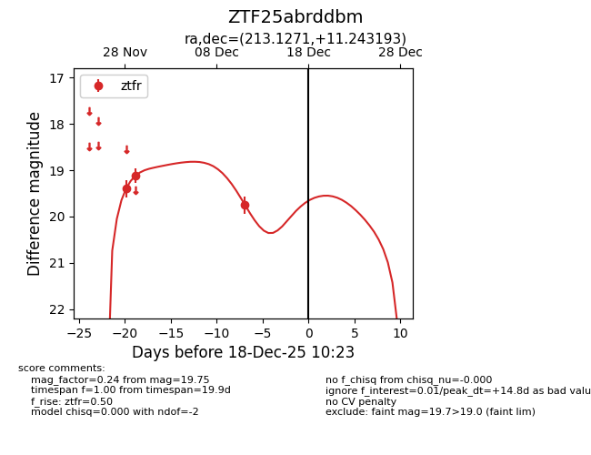
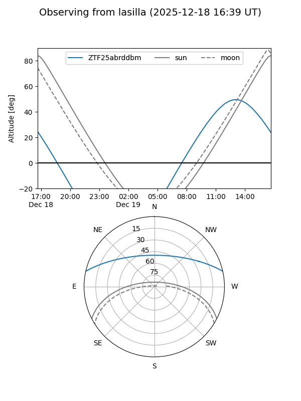
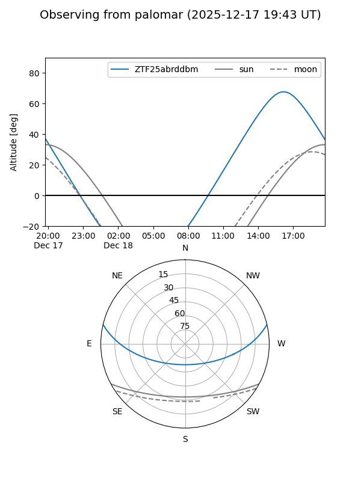

ZTF25abrddbm
Target ZTF25abrddbm at 2025-12-18 11:17
Aliases and brokers:
FINK: fink-portal.org/ZTF25abrddbm
Lasair: lasair-ztf.lsst.ac.uk/objects/ZTF25abrddbm
ALeRCE: alerce.online/object/ZTF25abrddbm
alt names
ZTF25abrddbm (ztf,fink_ztf)
Coordinates:
equatorial (ra, dec) = 213.1271,+11.24319
equatorial (HMS+DMS) = 14:12:30.50,+11:14:35.50
galactic (l, b) = (357.0237,+65.19851)
Photometry
last ztfr=19.75
3 ztfr detections
Lightcurve

Visibility


Additional plots